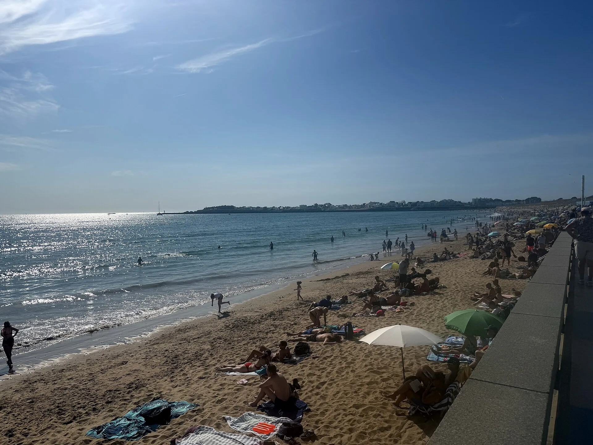

Grande Plage — Saint-Gilles-Croix-de-Vie
Vendée, France · surf, bodyboard, kitesurf

Grande plage de sable au cœur de Saint-Gilles-Croix-de-Vie, près du remblai et du centre-ville. L’office de tourisme la dit idéale pour les sports de glisse : surf, kitesurf, bodyboard. Une école de surf y propose cours et location, et la plage porte le label Handiplage.
- Lieu
- Vendée, France
- Niveau
- Variable selon les conditions
- Activités
- surf, bodyboard, kitesurf
- Type d'eau
- Mer / océan
- Coordonnées
- 46.68, -1.93 (position approximative du secteur)
Dangers à connaître
- Plage très fréquentée en haute saison, surtout près du remblai.
- Surveillance limitée à l’été : le reste de l’année, renseigne-toi avant d’entrer dans l’eau.
- Surf, kitesurf et bodyboard se partagent la plage : garde tes distances.
Le conseil d'Ocean Buddy
Entre dans l’eau dans la zone surveillée, drapeau en vue, et demande conseil à l’école de surf ou aux secouristes avant de surfer.
Ouvrir dans Ocean Buddy Télécharger sur l'App Store
Source : Fiche Ocean Buddy · octobre 2026 · d’après l’Office de tourisme Pays de Saint-Gilles et Atlantic Loire Valley · à vérifier localement.